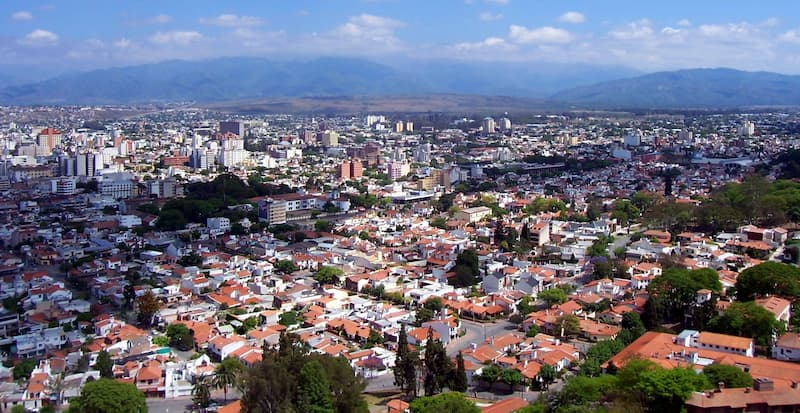

My favorite city is Salta, it is a beautiful city located at the north of Argentina.
The people of Salta are kind and cheerful and always with the desire invite you to know the city.
The food there is delicious and rich of history. In addition, the city of Salta since june 2024
has the presence of one of the most beautiful temples of South America, the Temple of Salta
